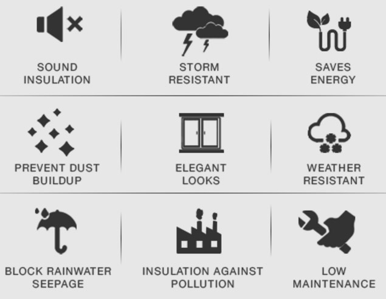

Elevation UPVC windows committed to providing the best solutions for every home in India. Supreme quality and incredible features is the hallmark that makes us India's No.1 window brand. Read on. Discover how our windows and doors can transform your home and the way you live
Energy Efficient
REDUCE YOUR AIR CONDITIONING COSTS: Gone are the days when the roles of windows and doors in the house were limited to just being sources of natural light and fresh air, or easing the access into the rooms (in case of doors).
Today, doors and windows have gained importance as an indispensable energy saving component in house building.
These problems can be kept to minimum by improving the energy efficiency and performance of your windows and doors. In fact, use of energy efficient windows and doors can help reduce your energy bills by almost 7%-15%.
Sound Insulation
CREATE YOUR OWN PEACEFUL RETREAT: Not so with our windows and doors, which when closed block out the outside disturbances, creating a comfortable environment to concentrate, enable a peaceful night's sleep, relax and enhance your quality of life. Below are the features that help Fenesta protect you from your city:
FUSION WELDED : Our products are factory made with multi-chambered profiles and fusion welded joints to improve overall sealing
SILICONE SEALANT : All gaps between the window/door unit and the wall are filled with a special silicone sealant
LAMINATED GLASS : Can also be fitted with Laminated or Double glazed laminated glass that can reduce unwanted noise levels by manifolds
Result: These problems can be kept to minimum by improving the energy efficiency and performance of your windows and doors. In fact, use of energy efficient windows and doors can help reduce your energy bills by almost 7%-15%.
Block Rainwater Seepage
WORRYING ABOUT THE BAD WEATHER: While we all enjoy rain and it spells good news for nature as well, it is not so much fun when the rain enters into your home. Rain water seepage can cause more damage and prove more costly than you think.
Aside from the obvious cost of repairs, which can escalate if the water seepage source isn't found and repaired, there's also the cost to your family's health from infections and respiratory ailments stemming from molds and bacteria formation.
The same problem gets accentuated with traditional wooden windows and doors as they warp and resulting gaps invite rain. With aluminium windows and doors, if not installed properly, rainwater accumulates in the tracks and spills inside.
RAIN TRACK : An elevated section clipped on the inside track of the system functions like a dam. It captures rainwater and drains it out
SILL ARRANGEMENT: This special system prevents air pressure from pushing the rainwater indoors. Instead, the rainwater flows down vertically, at some distance from the outer wall
GRADIENT SLOPE : A track at a downward slope of 5 degrees ensures that accumulated rainwater flow out
Result: The airtight sealing of Fenesta and these special monsoon features work together to protect the invasion of rain into your home! Staying at home in monsoon becomes even more enjoyable, knowing your dear ones as well as all your precious belongings are protected.
Protection from Storm
NO MORE WHISTLING SOUNDS: Wind speeds in India are much higher than those of other parts of the world (see map). Along the coast, in the eastern and the western parts of the country, wind speeds touch as high as 250 kmph, the equivalent of 3100 Pascal wind loads.
It gets worse in high-rise buildings. What appears to be a mild breeze on the ground floor becomes a gale force in the upper floors of a tall building. In these conditions, conventional windows and doors rattle and whistle.
In order to protect your home from such hurricanes and cyclones, Fenesta engineers have come up with innovative solutions that provide strong protection ensuring no rattling frames and no whistling sounds while increasing the safety and security of the home.
STEEL REINFORCEMENT : The UPVC frame is strengthened from within by steel reinforcements to provide a tough exterior to all frames and sashes.
HURRICANE BAR: This special system prevents air pressure from pushing the rainwater indoors. Instead, the rainwater flows down vertically, at some distance from the outer wall
MULTIPLE SEALS : Our products can be reinforced with a hurricane bar that can bear wind speeds up to 250 km/h.
COMPLETE CUSTOMIZATION : Multiple seals stop air ingress
Result: Withstand hurricane winds so quietly that you would get to know the outside impact only the next day from your neighbours.
Protection from Storm
NO MORE WHISTLING SOUNDS: Wind speeds in India are much higher than those of other parts of the world (see map). Along the coast, in the eastern and the western parts of the country, wind speeds touch as high as 250 kmph, the equivalent of 3100 Pascal wind loads.
It gets worse in high-rise buildings. What appears to be a mild breeze on the ground floor becomes a gale force in the upper floors of a tall building. In these conditions, conventional windows and doors rattle and whistle.
In order to protect your home from such hurricanes and cyclones, Fenesta engineers have come up with innovative solutions that provide strong protection ensuring no rattling frames and no whistling sounds while increasing the safety and security of the home.
STEEL REINFORCEMENT : The UPVC frame is strengthened from within by steel reinforcements to provide a tough exterior to all frames and sashes.
HURRICANE BAR: This special system prevents air pressure from pushing the rainwater indoors. Instead, the rainwater flows down vertically, at some distance from the outer wall
MULTIPLE SEALS : Our products can be reinforced with a hurricane bar that can bear wind speeds up to 250 km/h.
COMPLETE CUSTOMIZATION : Multiple seals stop air ingress
Result: Withstand hurricane winds so quietly that you would get to know the outside impact only the next day from your neighbours.
No Maintenance
NO PAINTING, NO POLISHING, NO MAINTENANCE HEADACHES: India happens to be situated in one of the highest UV receiving regions of the world. Solar radiation is far higher in India than other parts of the world (see the map). India also experiences climatic extremes - In summers temperature soar to as high as 50degree C in northern parts of the country and in winters temperatures in hills often fall below freezing point.
To overcome the severity of these conditions, Fenesta has created a special UV resistant UPVC blend, a unique tropical formulation that stands up to extreme radiation year after year and makes the windows and doors fade resistant, low maintenance requiring no paint or polish. The blend contains some special additives namely:
TITANIUM DIOXIDE : for a stable colour all through intense UV exposure for years.
IMPACT MODIFIERS: provide strength to the windows and doors to sustain impact loads even at sub-zero temperatures. All the frames and sashes are steel reinforced to provide a tough exterior.
FORMULATION OPTIMIZATION : UPVC blend ensure that the shape and lustre of Fenesta products remain intact through the wide temperature fluctuations.
COMPLETE CUSTOMIZATION : Multiple seals stop air ingress
Result: Your windows and doors keep looking as good as new for years together and even outlast the building. For maintenance of Fenesta windows and doors, refer Fenesta Maintenance guidelines. Mostly routine cleaning of dirt / dust from the surface will keep windows working year after year.
Prevent Dust Buildup
STAY CLEAN, STAY HAPPY - MAKE YOUR HOME SAFE AND HEALTHIER: Homes in India are troubled by dust all-round the year. The wind brings with it dust from construction sites, industries, stone quarries, pollen, vehicular traffic and even the occasional dust storms
Dust can be pretty troublesome. Apart from hours of effort in cleaning, it also reduces the life of curtains, upholstery and carpets. It also impacts your health - adversely giving rise to chronic illness like asthma. Today small children are also getting affected by it. Your fight against dust is a losing battle. You wipe your living room clean only to see a film of dust settle on furniture and the floor within minutes. Or you return from a vacation to a home laden with dust. The only way to keep dust out is to not let it in.
DOUBLE SEALING : Our products are double sealed with EDPM / TPE gaskets and joints are fusion welded ensuring no gaps remain anywhere.
MULTI-LOCK POINTS: Our windows and doors have multipoint locking system to ensure tight shutting down.
SILICON SEALANT : All gaps between the window/door unit and the wall are filled with a special silicon sealant.
INTERNATIONAL QUALITY STANDARDS : All our products are manufactured in state of the art factories. There is no area of glitch in any piece because the process of manufacture abides by the toughest international quality standards.
Result: Your windows and doors keep looking as good as new for years together and even outlast the building. For maintenance of Fenesta windows and doors, refer Fenesta Maintenance guidelines. Mostly routine cleaning of dirt / dust from the surface will keep windows working year after year.
© 2017 E WINDOWS